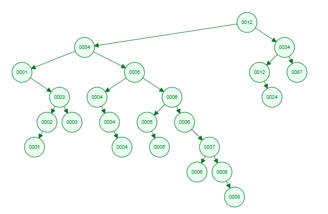

Get the root node if root node is null Add the given node as root node. exit else if root node is not null Get the value of root node as parent node if value of new node is less than or equal to the value of parent node (Step 1) The new node needs to be added as left child If the parent node already has left child Make left child as parent node and go to step 1 else if the parent node has no left child Add the node as child node else if value of new node is greater than the value of parent node The new node needs to be added as right child If the parent node already has right child Make right child as parent node and go to step 1 else if the parent node has no right child Add the node as child node
Output = Get the root element as current element current = 12 Check if current has left child yes 4 put current element on stack [12] Make left child as current element current = 4 Check if current has left child yes 1 put current element on stack [12, 4] Make left child as current element current = 1 Check if current has left child no null put current element on stack [12, 4, 1] Print value of current with no left child 1 Check if current has right child yes 3 put current element on stack [12, 4, 1, 3] Make right child as current element current = 3 Check if current has left child yes 2 Make left child as current element current = 2 Check if current has left child yes 1 Make left child as current element current = 1 Check if current has left child no null Print value of current with no left child 1 Check if current has right child no null Go back to previous current element current = 2 Print value of current 2 Check if current has right child no null Go back to previous current element current = 3 Print value of current 3 Check if current has right child yes 3 Make right child as current element current = 3 Check if current has left child no null Print value of current with no left child 3 Check if current has right child no null Go back to previous current element current = 3 Go back to previous current element current = 1
12, 4, 5, 6, 1, 34, 5, 4, 3, 2, 1, 4, 6, 7, 8, 8, 3, 4, 5, 6, 12, 87, 24
